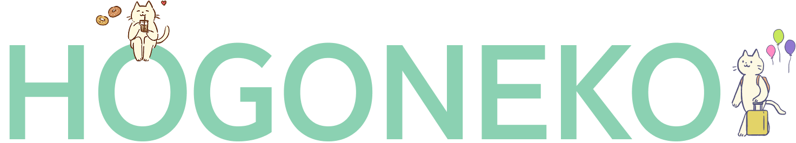
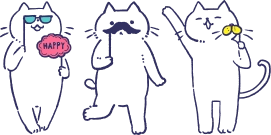
News
お知らせ
Our Story
私たちの想い
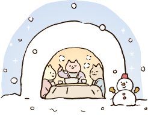
どんな子にも、あたたかな場所と食事を。
雨や寒さに怯えることなく、安心して眠れる毎日を届けたい。
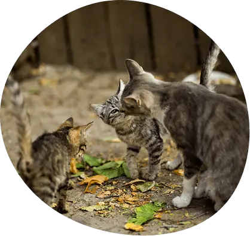
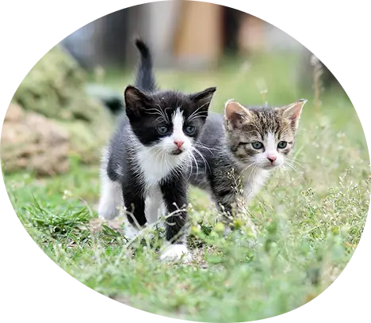
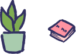
小さな命にもやさしさを。
生まれた場所に関係なく、すべての命を大切にしたいと私たちは考えています。
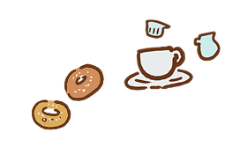
新しい家族と、新しい人生を送る。
出会いがつながり、猫と人 どちらにとっても幸せな未来へ。
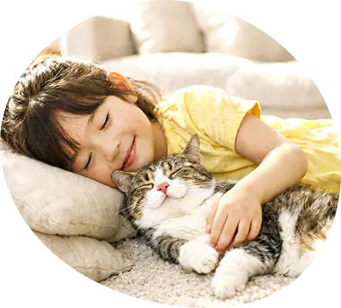
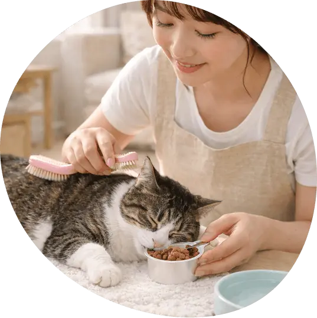
かわいそうな命が生まれない世界を目指して、私たちは今日も 小さな命と向き合っています。 この小さな歩みが、いつか大きな希望へつながるように。
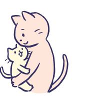
Activities
私たちの活動
猫たちの未来のために、
私たちができること
小さな命を守るための大切な取り組み
-
01. 保護
-
02. TNR活動
-
03. 譲渡
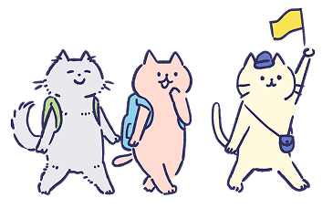
-
01
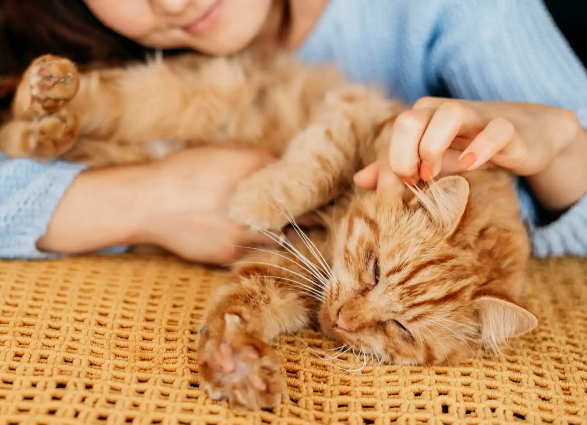
保護Save Life
行き場のない猫や、外で生きることが難しい猫を保護し、 安全で清潔な環境の中で心と体のケアを行っています。人になれえる練習をしながら、次の家族へ繋げていきます。
-
02
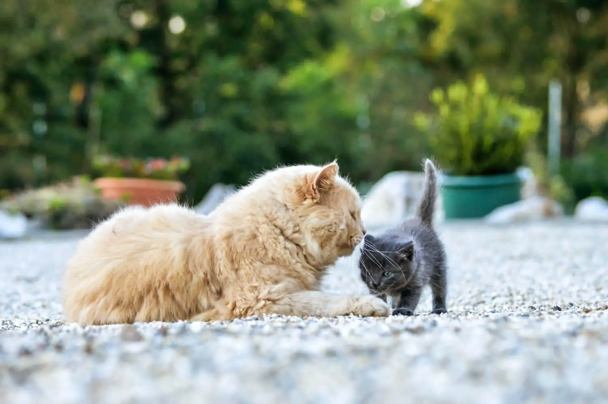
TNR活動Trap / Neuter /
Returnこれ以上不幸な命を増やさない為に、地域猫の捕獲、不妊去勢手術、元の場所へ戻す 活動を行い、人と猫が共に安心して暮らせる地域づくりを目指しています。
-
03
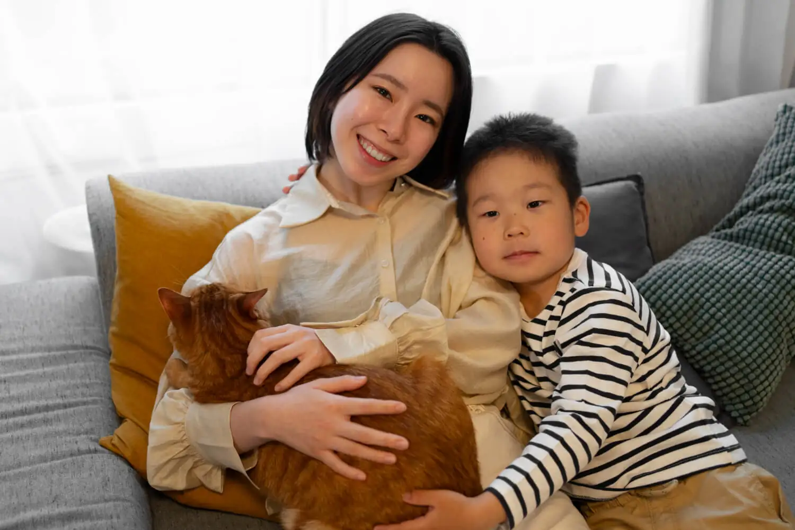
譲渡絆をつなぐ
小さな命をあたたかな家族へ。保護した猫たちが、一生大切にしてくれる家族と出会えるよう、譲渡活動を行っています。 猫と人、どちらにとってお幸せなご縁をつなぎます。
Adoption
里親募集
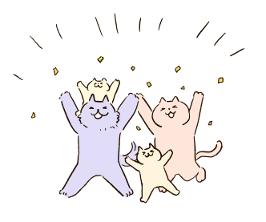
新しい家族を保護ねこから
私たちは、保護した猫たちが 「ただ引き取られる」のではなく、 家族として、安心して暮らせる場所に 出会えることを大切にしています。
How to Step
里親になるには
-
STEP
01お問い合わせ
-
STEP
02面談
-
STEP
03トライアル
-
STEP
04正式譲渡
詳細は下記のリンクへ
Our Staff
スタッフの紹介
-
山田 花子
スタッフ歴8年
Read Message add_circle
-
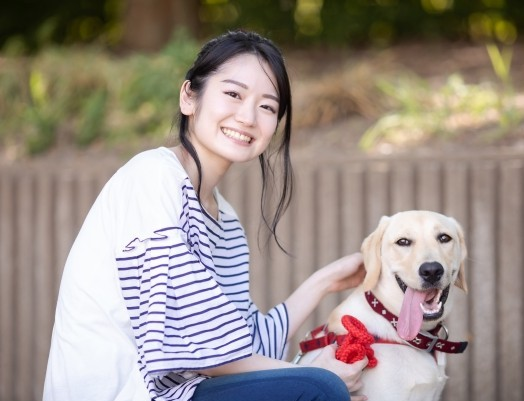
小川 流子
スタッフ歴3年
Read Message add_circle
-
花壇 綺麗
スタッフ歴5年
Read Message add_circle
ボランティアを募集しています
詳しくはこちら outbound